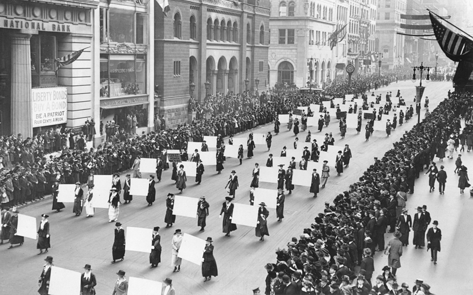
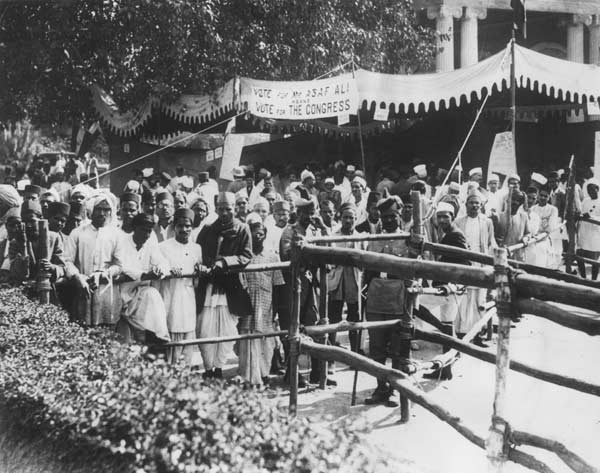

Nobody can go back and start a new beginning, but anyone can start today and make a new ending.
“Elections belong to the people. It's their decision. If they decide to turn their back on the fire and burn their behinds, then they will just have to sit on their blisters.”
― Abraham Lincoln
History of Elections
Although elections were used in ancient Athens, in Rome, and in the selection of popes and Holy Roman emperors, the origins of elections in the contemporary world lie in the gradual emergence of representative government in Europe and North America beginning in the 17th century. At that time, the holistic notion ofrepresentation characteristic of the Middle Ages was transformed into a moreindividualistic conception, one that made the individual the critical unit to be counted. For example, the British Parliament was no longer seen as representing estates, corporations, and vested interests but was rather perceived as standing for actual human beings. The movement abolishing the so-called “rotten boroughs”—electoral districts of small population controlled by a single person or family—that culminated in the Reform Act of 1832 (one of three major Reform Bills in the 19th century in Britain that expanded the size of the electorate) was a direct consequence of this individualistic conception of representation. Once governments were believed to derive their powers from the consent of the governed and expected to seek that consent regularly, it remained to decide precisely who was to be included among the governed whose consent was necessary. Advocates of full democracy favoured the establishment of universal adult suffrage. Across western Europe and North America, adult male suffrage was ensured almost everywhere by 1920, though woman suffrage was not established until somewhat later (e.g., 1928 in Britain, 1944 in France, 1949 in Belgium, and 1971 in Switzerland).
Although it is common to equate representative government and elections withdemocracy, and although competitive elections under universal suffrage are one of democracy’s defining characteristics, universal suffrage is not a necessary condition of competitive electoral politics. An electorate may be limited by formal legal requirements—as was the case before universal adult suffrage—or it may be limited by the failure of citizens to exercise their right to vote. In many countries with free elections, large numbers of citizens do not cast ballots. For example, in Switzerlandand the United States, fewer than half the electorate vote in most elections. Although legal or self-imposed exclusion can dramatically affect public policy and even undermine the legitimacy of a government, it does not preclude decision making by election, provided that voters are given genuine alternatives among which to choose.

Women's suffragists parade in New York City in 1917, carrying placards
with signatures of more than a million women.
During the 18th century, access to the political arena depended largely on membership in an aristocracy, and participation in elections was regulated mainly by local customs and arrangements. Although both the American and French revolutions declared every citizen formally equal to every other, the vote remained an instrument of political power possessed by very few.
Even with the implementation of universal suffrage, the ideal of “one person, one vote” was not achieved in all countries. Systems of plural voting were maintained in some countries, giving certain social groups an electoral advantage. For example, in the United Kingdom, university graduates and owners of businesses in constituencies other than those in which they lived could cast more than one ballot until 1948. Before World War I, both Austria and Prussia had three classes of weighted votes that effectively kept electoral power in the hands of the upper social strata. Until the passage of the Voting Rights Act in 1965 in the United States, legal barriers and intimidation effectively barred most African Americans—especially those in the South—from being able to cast ballots in elections.
During the 19th and 20th centuries, the increased use of competitive mass elections in western Europe had the purpose and effect of institutionalizing the diversity that had existed in the countries of that region. However, mass elections had quite different purposes and consequences under the one-party communist regimes of eastern Europe and the Soviet Union during the period from the end of World War II to 1989–90. Although these governments held elections, the contests were not competitive, as voters usually had only the choice of voting for or against the official candidate. Indeed, elections in these countries were similar to the 19th-century Napoleonic plebiscites, which were intended to demonstrate the unity rather than the diversity of the people. Dissent in eastern Europe could be registered by crossing out the name of the candidate on the ballot, as several million citizens in the Soviet Union did in each election before 1989; however, because secret voting did not exist in these countries, this practice invited reprisals. Nonvoting was another form of protest, especially as local communist activists were under extreme pressure to achieve nearly a 100 percent turnout. Not all elections in eastern Europe followed the Soviet model. For example, in Poland more names appeared on the ballot than there were offices to fill, and some degree of electoral choice was thus provided.
In sub-Saharan Africa, competitive elections based on universal suffrage were introduced in three distinct periods. In the 1950s and ’60s, a number of countries held elections following decolonization. Although many of them reverted to authoritarian forms of rule, there were exceptions (e.g., Botswana and Gambia). In the late 1970s, elections were introduced in a smaller number of countries when some military dictatorships were dissolved (e.g., in Ghana and Nigeria) and other countries in Southern Africa underwent decolonization (e.g., Angola, Mozambique, and Zimbabwe). Beginning in the early 1990s, the end of the Cold War and the reduction of military and economic aid from developed countries brought about democratization and competitive elections in more than a dozen African countries, including Benin, Mali, South Africa, and Zambia.

Voters outside the Town Hall in Delhi during polling in the Assembly elections in December 1934
Competitive elections in Latin America also were introduced in phases. In the century after 1828, for example, elections were held in Argentina, Chile, Colombia, and Uruguay, though all but Chile reverted to authoritarianism. Additional countries held elections in the period dating roughly 1943 to 1962, though again many did not retain democratic governments. Beginning in the mid 1970s, competitive elections were introduced gradually throughout most of Latin America.
In Asia, competitive elections were held following the end of World War II, in many cases as a result of decolonization (e.g., India, Indonesia, Malaysia, and the Philippines), though once again the restoration of authoritarianism was commonplace. Beginning in the 1970s, competitive elections were reintroduced in a number of countries, including the Philippines and South Korea. With the exception of Turkey and Israel, competitive elections in the Middle East are rare. Authoritarian regimes often have used elections as a way to achieve a degree of popular legitimacy. Dictatorships may hold elections in cases where no substantive opposition is remotely feasible (e.g., because opposition forces have been repressed) or when economic factors favour the regime. Even when opposition parties are allowed to participate, they may face intimidation by the government and its allies, which thereby precludes the effective mobilization of potential supporters. In other cases, a regime may postpone an election if there is a significant chance that it will lose. In addition, it has been a common practice of authoritarian regimes to intervene once balloting has begun by intimidating voters (e.g., through physical attacks) and by manipulating the count of votes that have been freely cast.